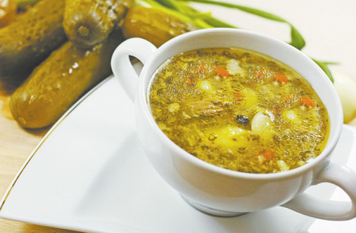

Rasolnik

Description
This is a recipe of soup. It's really popular in Russia.
Ingredients
chiken soup
onion
carrot
potatoes
rice
salty (marinated) pickles
sunflower oil
Steps
soak the rice
clean potatoes and cut it onto small pieces
reheat chiken soup
put rice and popatoes into the pot
cut the onin onto small pieces
fry onion with sunflower oil and put it into the pot
grate carrot by big(medium) grater
fry carrot with sunflower oil and put it into the pot
cut pickles onto small pieces
fry pickles with sunflower oil and put it into the pot
cook 15 minutes